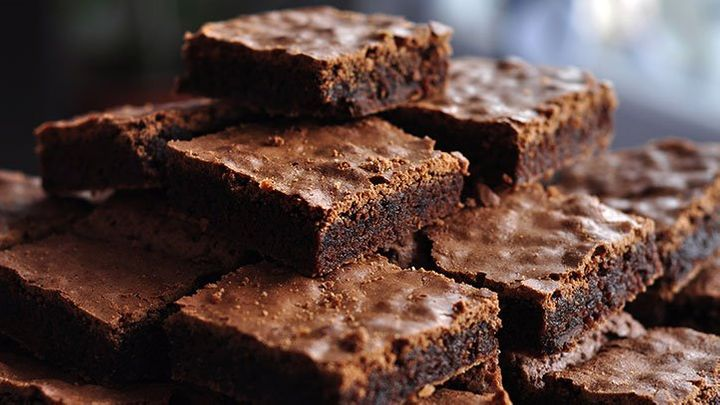

Brownie

Prep Time:
Cook Time:
Servings:
Calories:
15min
30min
9 pieces
371 Cal
Ingredients
- 200 grams Semi-sweet dark chocolate
- 1/2 cup Butter 1/2 ((115 grams))
- 1 cup Granulated sugar
- 1/2 cup Brown sugar
- 3 medium size Eggs
- 1/4 tsp Salt
- 1 tsp Vanilla essence
- 1/2 cup All-purpose flour
- 1/4 cup Cocoa powder
Recipe
- Grease a 7×7-inch dark metal pan with melted butter and line with parchment paper, leaving overhang on all sides
- Preheat your oven at 350℉ (180℃)
- place a bowl on top of a simmering water making sure that the bottom of the bowl isn’t touching the water. Add 1/2 cup of butter to the bowl.
- Whisk the chocolate and the butter together until melts.
- In a separate bowl, take both the sugar
- add 1 egg at a time and mix properly using a hand whisk
- When the mixture is a little creamy add the salt, the vanilla essence, and the cooled chocolate and butter mixture
- Mix everything well. Sift the flour and the cocoa powder into the bowl and carefully fold them into the mixture using a spatula.
- pour the batter into the prepared baking pan then gently shake and tap the tin couple of times to spread the batter evenly
- Bake it in preheated oven for about 30 minutes
- When your brownie is baked take it out of the oven and let it cool for at least 15 minutes. Enjoy your brownies !